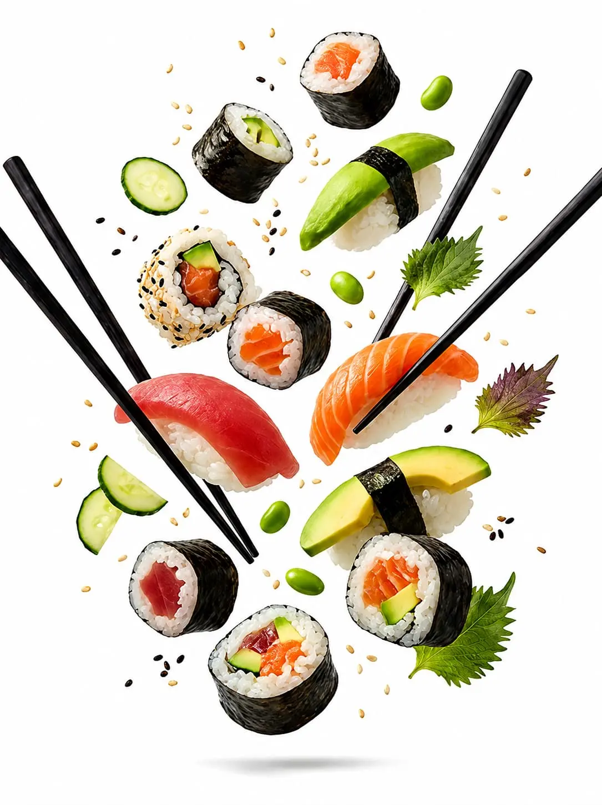
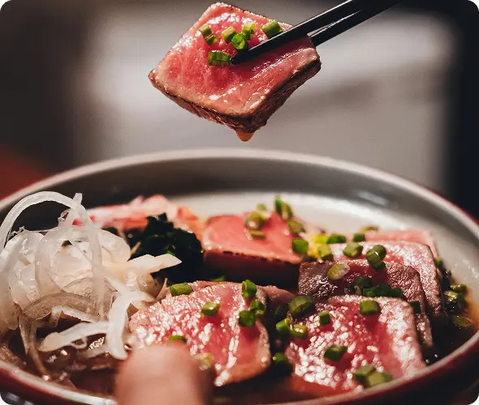
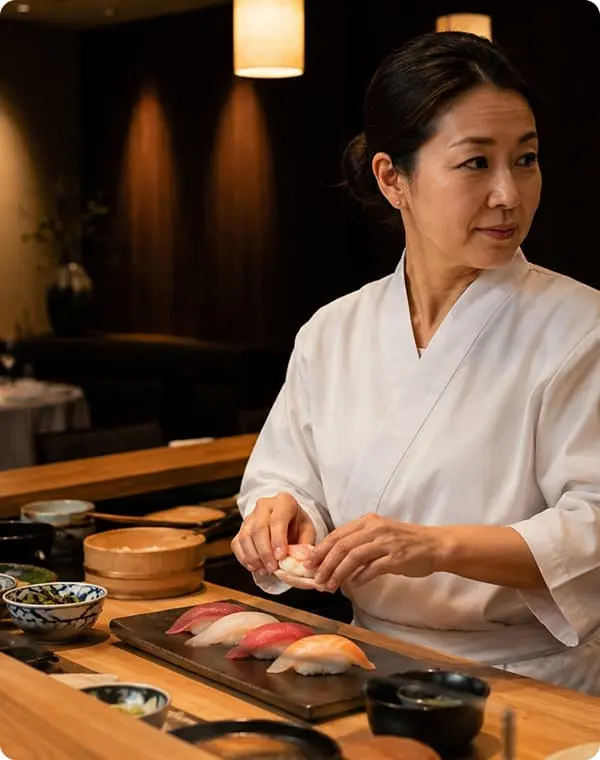
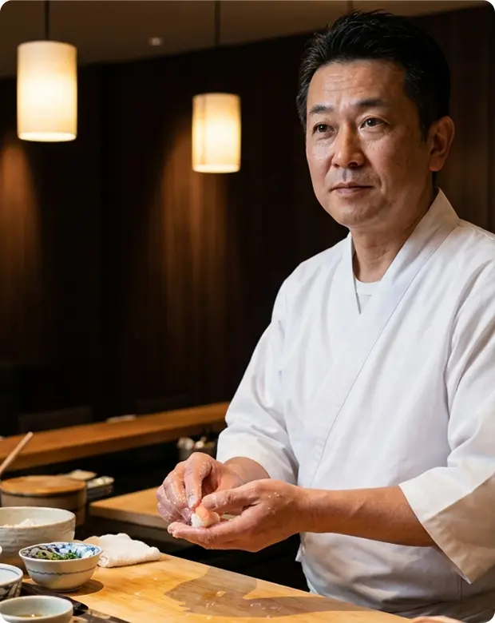

Sushi Especial
Salmão fresco, arroz temperado e ingredientes selecionados.
R$ 42,90Pratos japoneses preparados com ingredientes frescos, sabores equilibrados e a qualidade que você merece.
Ver o cardápio

Inspirados pela tradição japonesa, nossos pratos unem técnica, frescor e uma experiência gastronômica sofisticada.
Salmão fresco, arroz temperado e ingredientes selecionados.
R$ 42,90
Fatias frescas de salmão servidas com autenticidade japonesa.
R$ 38,90
Temaki crocante com salmão, cream cheese e cebolinha fresca.
R$ 29,90
Atum levemente selado com molho especial e toque oriental.
R$ 46,90
Rolinho invertido com salmão, cream cheese e gergelim torrado.
R$ 34,90
Lámen artesanal com caldo encorpado e sabores orientais.
R$ 39,90
Com anos de experiência na culinária japonesa, Yumi domina técnicas tradicionais e contemporâneas.

Especialista em sushi tradicional com mais de 15 anos de experiência, Ken Tanaka une técnica, precisão e autenticidade em cada criação.